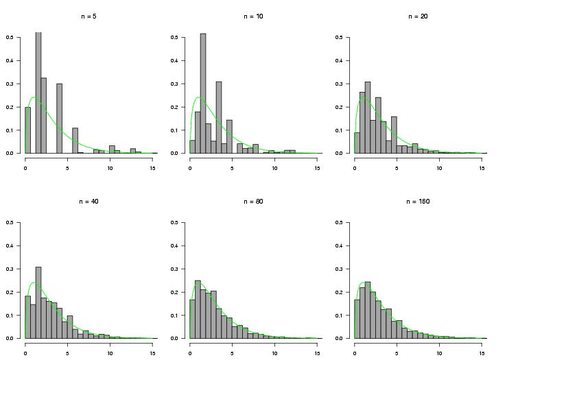

Below are the histograms. The green line is the density of a
chi-square distribution with 3 degrees of freedom. When n is small
(n=5, 10, 20, 40), the chi-square approximation is not really
appropriate. In this case, we should carry out permutation tests. As
n gets large, the histograms resemble said chi-square distribution,
and we can use the asymptotic results. Note that for n=80, the
expected number of counts are (45,15,15,5), i.e. 5 or larger in
each bin.

For the likelihood-ratio test statistic we have to calculate the logarithm of the ratio of observed numbers and expected numbers. If n is small, there is a high probability that the count of at least one of the four bins generated by the multinomial distribution is 0. However log(0) is not defined. With the chi-square test we do not have this problem.